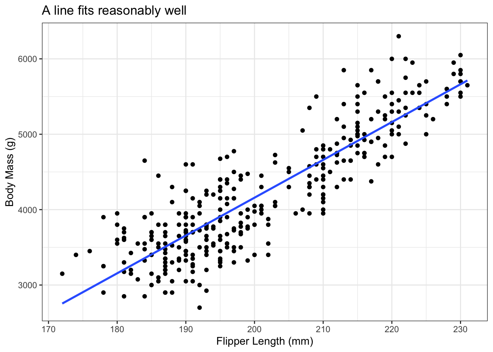
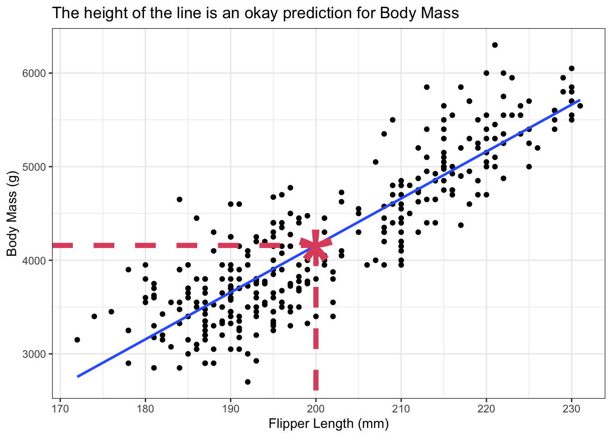

library(ggplot2)
theme_set(theme_bw())
library(palmerpenguins)
penguins <- penguins[complete.cases(penguins),]
ggplot(penguins) +
aes(x = flipper_length_mm, y = body_mass_g) +
geom_point() +
geom_smooth(method = "lm", se = FALSE, formula = y~x) +
labs(title = "A line fits reasonably well",
x = "Flipper Length (mm)",
y = "Body Mass (g)")2 Fitting Straight Lines
2.1 Why Fit Models?
The Quote.
“All models are wrong, some are useful.” - George Box
All Models Are Wrong, But Some Are Useful
Model: A mathematical equation that explains something about the world.
- Gravity: 9.8 \(m/s^2\) right?
- This is a model - it’s a relationship that explains something in the world.
- Varies across the surface of the Earth.
- Varies according to air resistance.
- Every additional cigarette decreases your lifespan by 11 minutes.
- Very, very much wrong.
- Very, very useful for communication.
All Linear Models are Wrong
ggplot(mtcars) +
aes(x = disp, y = mpg) +
geom_point(size = 2) +
geom_smooth(method = "lm", se = FALSE, formula = y~x) +
geom_smooth(method = "lm", se = FALSE, formula = "y~poly(x, 2)", colour = 2) +
labs(title = "A straight line misses the pattern",
subtitle = "A polynomial might fit better",
x = "Engine Displacement (1000 cu.in)",
y = "Fuel Efficiency (mpg)")
Some Linear Models are Useful
xpred <- 200
ypred <- predict(
lm(body_mass_g ~ flipper_length_mm, data = penguins),
newdata = data.frame(flipper_length_mm = xpred))
ggplot(penguins) +
aes(x = flipper_length_mm, y = body_mass_g) +
geom_point() +
geom_smooth(method = "lm", se = FALSE, formula = y~x) +
labs(title = "The height of the line is an okay prediction for Body Mass",
x = "Flipper Length (mm)",
y = "Body Mass (g)") +
annotate(geom = "point", shape = "*", size = 30, colour = 2,
x = xpred,
y = ypred) +
annotate(geom = "segment", colour = 2, size = 2,
linetype = "dashed",
x = xpred, xend = xpred,
yend = -Inf, y = ypred) +
annotate(geom = "segment", colour = 2, size = 2,
linetype = "dashed",
x = -Inf, xend = xpred,
yend = ypred, y = ypred)
A Model is an Equation
\[ y_i = \beta_0 + \beta_1x_i + \epsilon_i \Leftrightarrow Y = X\underline\beta + \underline\epsilon \Leftrightarrow E(Y|X) = X\underline \beta;\; V(Y|X)=\sigma^2 \]
- For a one unit increase in \(x_i\), \(y_i\) increases by \(\beta_1\).
- If our model fits well and this is statistically significant, we can apply this to the population.
- The estimated value of \(y_i\) when \(x_i=0\) is \(\beta_0\).
- Not always interesting, but usually\(^*\) necessary.
Our prediction for \(y_i\) at any given value of \(x_i\) is calculated as: \[ \hat y_i = \hat\beta_0 + \hat \beta_1x_i \] where the “hats” mean we’ve found estimates for the \(\beta\) values.
Aside: My notation differs from the text
I will make mistakes, but in general:
- \(Y\) is a random variable (usually a vector) representing the response.
- \(Y_i\) is also a random variable (not a vector)
- \(\underline y\) is the response vector; the observed values of \(Y\)
- \(\underline x\) is the vector of covariates in simple linear regression
- \(X\) is a matrix of covariates
- Not a random variable!!! Capital letters could be either random or matrix (or both). I will specify when necessary.
- I will avoid the notation \(X_i\).
- When necessary, the first column is all ones so that \(X\underline\beta=\beta_0 + \beta_1\underline x_1 + \beta_1\underline x_2 + ...\).
- Context should make this clear.
The Mean of \(Y\) at any value of \(X\)
\[ E(Y|X) = X\underline\beta \]
A Linear Model is Linear in the Parameters
The following are linear:
- \(y_i = \beta_0 + \beta_1x_i + \epsilon_i\)
- \(y_i = \beta_0 + \beta_1x_i + \beta_2x_i^2 + \epsilon_i\)
- \(y_i = \beta_0 + \beta_1\sin\left(x_i^{x_i}\right) + \beta_2x_i^{\sin(x_i)} + \epsilon_i\)
The following are not linear:
- \(y_i = \beta_0 + \beta_1^2x_i +\epsilon_i\)
- \(y_i = \beta_0 + \beta_0\beta_1x_i +\epsilon_i\)
- \(y_i = \beta_0 + \sin(\beta_1)x_i +\epsilon_i\)
2.2 Estimation
Goal: Find \(\beta\) values which minimize the error
Model: \(y_i = \beta_0 + \beta_1x_i + \epsilon_i\)
Error: \(\hat\epsilon_i = y_i - \hat y_i\)
Why is this a bad way to do it?
Least Squares
Goal: Minimize \(\sum_{i=1}^n\hat\epsilon_i^2=\sum_{i=1}^n(y_i - \hat y_i)^2\), the sum of squared errors.
This ensures errors don’t cancel out. It also penalizes large errors more.
Could we have used \(|\epsilon_i|\), or some other function? \(|ly|\)!
Least Squares Estimates
I assume that you can do the Least Squares estimate in your sleep (be ready for tests).
The final results are: \[\begin{align*} \hat\beta_0 &= \bar y - \hat\beta_1\bar x\\ \hat\beta_1 &= \frac{\sum_{i-1}^n(x_i - \bar x)(y_i - \bar y)}{\sum_{i-1}^n(x_i - \bar x)^2}\stackrel{def}{=}\frac{S_{XY}}{S_{XX}} \end{align*}\]
The textbook was written in 1998 and gives formulas to make the calculation easier to do on pocket calculators. You will not need a pocket calculator for this course.
Let’s Add Assumptions
Assumptions allow great things, but only when they’re correct!
- \(E(\epsilon_i) = 0\), \(V(\epsilon_i) = \sigma^2\).
- \(cov(\epsilon_i, \epsilon_j) =0\) when \(i\ne j\).
- Implies that \(E(y_i) = \beta_0 + \beta_1x_i\) and \(V(y_i) = \sigma^2\).
- \(\epsilon_i\stackrel{iid}{\sim} N(0,\sigma^2)\)
- This is a strong assumption, but often works!
Interpretation: the model looks like a line with completely random errors. (“Completely random” doesn’t mean “without structure”!)
Mean of \(\hat\beta_1\)
It is easy to show that \[ \hat\beta_1 = \frac{\sum_{i-1}^n(x_i - \bar x)(y_i - \bar y)}{\sum_{i-1}^n(x_i - \bar x)^2} = \frac{\sum_{i-1}^n(x_i - \bar x)y_i}{\sum_{i-1}^n(x_i - \bar x)^2} \] since \(\sum(x_i - \bar x) = 0\).
Homework: show that \(E(\hat\beta_1) = \beta_1\) (Hint: use the fact that \(E(y_i) = \beta_0 + \beta_1x_i\) and the “pocket calculator” expansions).
Variance of \(\hat\beta_1\)
\[ \hat\beta_1 = \frac{\sum_{i-1}^n(x_i - \bar x)y_i}{\sum_{i-1}^n(x_i - \bar x)^2} \] can be re-written as \[ \hat\beta_1 = \sum_{i=1}^na_iy_i\text{, where }a_i = \frac{x_i - \bar x}{\sum_{i=1}^n(x_i - \bar x)^2} \]
Thus the variance of \(\hat\beta_1\) is \[ V(\hat\beta_1) = \sum_{i=1}^na_i^2V(y_i) = ... = \frac{\sigma^2}{S_{XX}} \stackrel{plug-in}{=} = \frac{s^2}{S_{XX}} \]
Confidence Interval and Test Statistic for \(\hat\beta_1\)
The test statistic can be found as: \[ t = \frac{\hat\beta_1 - \beta_1}{se(\hat\beta_1)} = \frac{(\hat\beta_1 - \beta_1)\sqrt{S_{XX}}}{s} \sim t_\nu \]
Since this follows a \(t\) distribution, we can get the CI: \[ \hat\beta_1 \pm t_\nu(\alpha/2)\sqrt{\frac{s^2}{S_{XX}}} \]
2.3 Participation Questions
Q1
All models are useful, but some are wrong.
- True
- False
Q2
For a one unit increase in \(x\), \(y\) increases by
- \(\beta_0\)
- \(\beta_1\)
- \(\beta_1x\)
- \(\beta_0 + \beta_1x\)
Q3
The standard error of \(\beta_1\) refers to:
- The variance of the population slope
- The amount by which the slope might be off
- The variance of the estimated slope across different samples
- A big chicken. Not, like, worryingly big, but big enough that you’d be like, “Wow, that’s a big chicken!”
Q4
Which is not an assumption that we usually make in linear regression?
- \(V(\epsilon_i) = \sigma^2\)
- \(E(\epsilon_i) = 0\)
- \(E(X) = 0\)
- \(\epsilon_i\stackrel{iid}{\sim}N(0,\sigma^2)\)
Q5
Which of the following is not a linear model?
- \(y_i = \beta_0 + \beta_1^2x_i + \epsilon_i\)
- \(y_i = \beta_0 + \beta_1x_i + \beta_2x_i^2 + \epsilon_i\)
- \(y_i = \beta_0 + \beta_0x_i +\epsilon_i\)
- \(y_i = \beta_0 + \beta_1\sin\left(x_i^{x_i}\right) + \beta_2x_i^{\sin(x_i)} + \epsilon_i\)
Q6
The sum of squared errors is the best way to estimate the model parameters.
- True
- False
2.4 Analysis of Variance
Statistics is the Study of Variance
- Given a data set with variable \(\underline y\), \(V(\underline y) = \sigma^2_y\).
- This is just the variance of a single variable.
- Once we’ve incorporated the linear relationship with \(\underline x\), \(V(\hat\beta \underline x + \underline\epsilon)=0+V(\underline\epsilon) = \sigma^2\)
- Mathematically, \(\sigma^2 \le \sigma_y^2\).
The variance in \(Y\) is explained by \(X\)!
A Useful Identity, and its Interpretations
\[\begin{align*} \hat\epsilon_i &= y_i - \hat y_i \\&= y_i - \bar y - (\hat y_i - \bar y)\\ \implies \sum_{i=1}^n\hat\epsilon_i^2 &= \sum_{i=1}^n(y_i-\bar y)^2 - \sum_{i=1}^n(\hat y_i - \bar y)^2 \end{align*}\] where we’ve simply added and subtracted \(\bar y\). The final line skips a few steps (try them yourself)!
The last line is often written as: \(SS_E = SS_T - SS_{Reg}\)
Sums of Squares
\[ SS_E = SS_T - SS_{Reg} \]
- \(SS_E\): Sum of Squared Errors
- \(SS_T\): Sum of Squares Total (i.e., without \(\underline x\))
- \(SS_{Reg}\): Sum of Squares due to the regression.
- It’s the variance of the line (calculated at observed \(\underline x\) values) around the mean of \(\underline y\)???
- This is incredibly useful, but weird.
- I use \(SS_{Reg}\) instead of \(SS_R\) because some textbooks use \(SS_R\) as the Sume of Squared Residuals, which is confusing.
- It’s the variance of the line (calculated at observed \(\underline x\) values) around the mean of \(\underline y\)???
Aside: Degrees of Freedom
Def: The number of “pieces of information” from \(y_1, y_2, ..., y_n\) to construct a new number.
- If I have \(x = (1,3,2,1,3,???)\) and I know that \(\bar x = 2\), I can recover the missing piece.
- The mean “uses” (accounts for) one degree of freedom
- If I have \(x = (1,2,3,1,???,???)\) and I know \(\bar x = 2\) and \(s_x^2=1\), I can recover the two missing pieces.
- The variance accounts for two degrees of freedom.
- One \(df\) is required to compute it.
- The variance accounts for two degrees of freedom.
Estimating one parameter takes away one degree of freedom for the rest!
- Can find \(\bar x\) when \(x = (1)\), but can’t find \(s_x^2\) because there aren’t enough \(df\)!
Sums of Squares
| Source of Variation | Degress of Freedom \(df\) | Sum of Squares (\(SS\)) | Mean Square (\(MS\)) |
|---|---|---|---|
| Regression | 1 | \(\sum_{i=1}^n(\hat y_i - \bar y)^2\) | \(MS_{Reg}\) |
| Error | \(n-2\) | \(\sum_{i=1}^n(y_i - \hat y_i)^2\) | \(MS_E=s^2\) |
| Total | \(n-1\) | \(\sum_{i=1}^n(y_i - \bar y)^2\) | \(s_y^2\) |
- Notice that \(SS_T = SS_{Reg} + SS_E\), which is also true for the \(df\) (but not \(MS\)).
- Why is \(df_E = n-2\)? What two parameters have we estimated?
- \(df_{Reg}\) is trickier to explain. It suffices to know that \(df_{Reg} = df_T-df_E\).
Using Sums/Means of Squares
- If \(\hat y_i = \bar y\) for all \(i\), then we have a horizontal line!
- That is, there is no relationship between \(\underline x\) and $\underline \(y\).
- In this case, \(SS_{reg} = \sum_{i=1}^n(\hat y_i - \bar y)^2 = 0\).
Okay, so, just test for \(SS_{Reg} = 0\)?
But how??? We need some measure of how far from 0 is statistically significant!!!
Recall that \(SS_E = \sum_{i=1}^n(y_i - \hat y_i)^2\).
- We can compare the variation around the line to the variation of the line.
- This is \(MS_{Reg}/MS_E\), and it follows an \(F\) distribution!!
The F-test for Significance of Regression
\[ F_{df_{Reg}, df_E} = \dfrac{MS_{Reg}}{MS_E} = \dfrac{MS_{Reg}}{s^2} \]
- Recall that \(SS_{Reg} = SS_E + SS_T > SS_E\), but the \(df\) make a difference.
- For homework, show that \(E(MS_{Reg}) = \sigma^2 + \beta_1^2\sum_{i=1}^n(x_i-\bar x)^2\)
- This implies that \(E(MS_{Reg}) > E(MS_E) = \sigma^2\).
Exercise A from Chapter 3 (Ch03 Exercises cover Ch1-3)
A study was made on the effect of temperature on the yield of a chemical process. The data are shown to the right.
- Assuming \(y_i = \beta_0 + \beta_1x_i + \epsilon_i\), what are the least squares estimates of \(\beta_0\) and \(\beta_1\)?
- Construct the analysis of variance table and test the hypothesis \(H_0: \beta_1=0\) at the 0.05 level.
- What are the confidence limits (at = 0.05) for \(\beta_1\)?
library(aprean3) # Data from textbook
head(dse03a) # Data Set Exercise Ch03A x y
1 -5 1
2 -4 5
3 -3 4
4 -2 7
5 -1 10
6 0 8nrow(dse03a)[1] 11